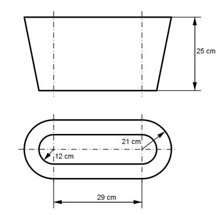

Aufgabe 289 Wie groß ist das Volumen V des in der Vorder- und Draufsicht dargestellten Zeitungsständers?  V = Trapezprisma P + Kegelstumpf K л * h K = -------- * (r1² + r1 * r2 + r2²) 3 л * 25 K = -------- * (12² + 12 * 21 + 21²) cm³ 3 л * 25 K = -------- * (144 + 12 * 21 + 441) cm³ 3 K = 21 901 cm³ = 21,9 dm³ 42 cm + 24 cm P = ---------------- * 25 cm * 29 cm = 23 925 cm³ = 23,9 dm³ 2 V = P + K = 23,9 dm³ + 21,9 dm³ = 45,8 dm³